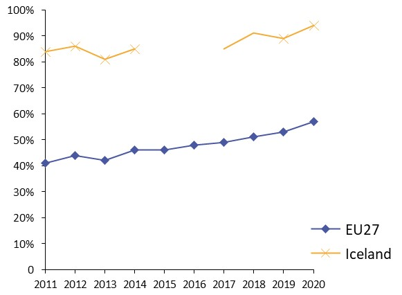
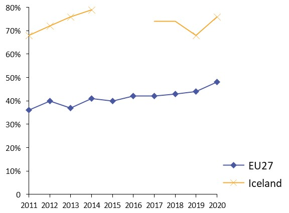
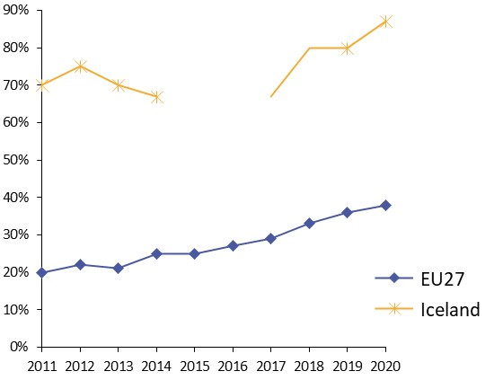
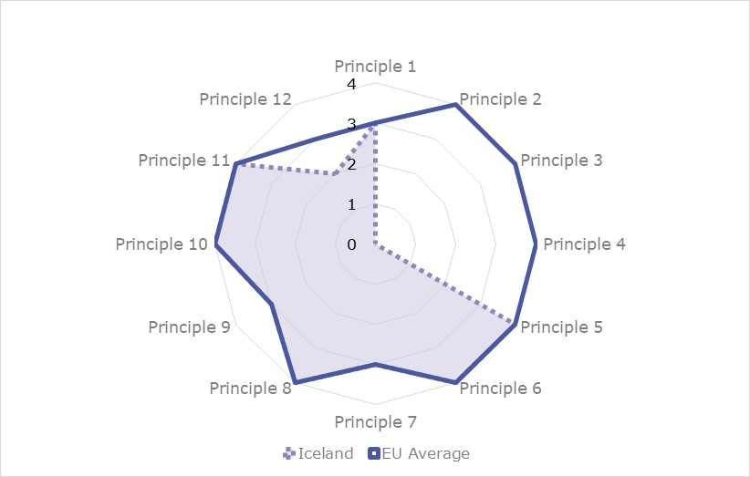
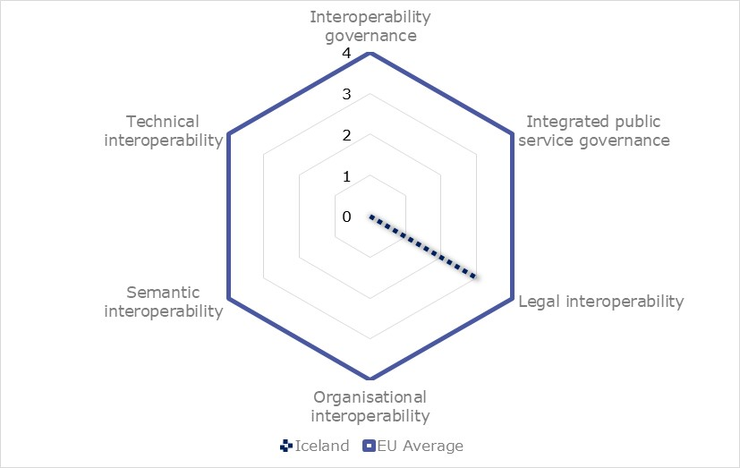
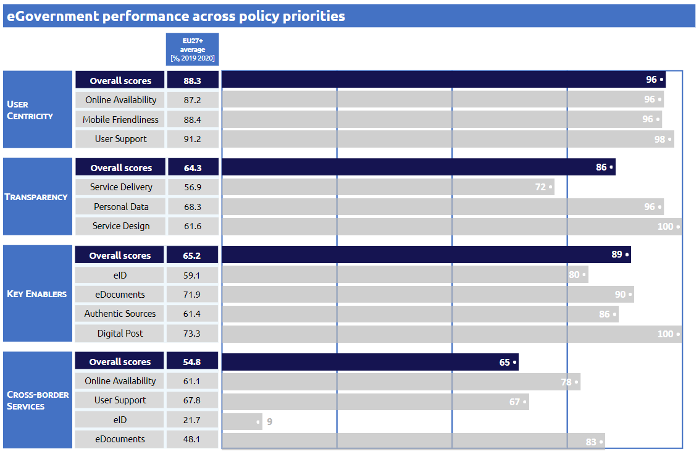

Digital Public Administration factsheet 2021
Iceland
Digital Public Administration factsheet 2021
Table of Contents
2 Digital Public Administration Highlights 11
3 Digital Public Administration Political Communications 13
4 Digital Public Administration Legislation 20
5 Digital Public Administration Governance 24
6 Digital Public Administration Infrastructure 29
7 Cross-border Digital Public Administration Services 34
Please note that the data collection exercise for the update of the 2021 edition of the Digital Public Administration factsheets took place between March and June 2021. Therefore, the information contained in this document reflects this specific timeframe.
Country
Profile
1
Country Profile
Basic data
Population: 366 463 inhabitants (2020)
GDP at market prices: 19 022.2 (2020)
GDP per inhabitant in PPS (Purchasing Power Standard EU 27=100): 125 (2020)
GDP growth rate: -6.6 (2020)
Inflation rate: 1.2 (2020)
Unemployment rate: 5.5 % (2020)
General government gross debt (Percentage of GDP): No data available
General government deficit/surplus (Percentage of GDP): No data available
Area: 103 000 km²
Capital city: Reykjavik
Currency: ISK
Source: Eurostat (last update: 26 June 2020)
Digital Public Administration Indicators
The following graphs present data for the latest Generic Information Society Indicators for Iceland compared to the EU average. Statistical indicators in this section reflect those of Eurostat at the time the Edition is being prepared.
Percentage of individuals using the internet for interacting with public authorities in Iceland | Percentage of individuals using the internet for obtaining information from public authorities in Iceland |
 |  |
Percentage of individuals using the internet for downloading official forms from public authorities in Iceland | Percentage of individuals using the internet for sending filled forms to public authorities in Iceland |
|  |

Interoperability State of Play
In 2017, the European Commission published the European Interoperability Framework (EIF) to give specific guidance on how to set up interoperable digital public services through a set of 47 recommendations. The picture below represents the three pillars of the EIF around which the EIF Monitoring Mechanism was built to evaluate the level of implementation of the EIF within the Member States. It is based on a set of 71 Key Performance Indicators (KPIs) clustered within the three main pillars of the EIF (Principles, Layers and Conceptual model), outlined below.

Source: European Interoperability Framework Monitoring Mechanism 2020

Source: European Interoperability Framework Monitoring Mechanism 2020

Source: European Interoperability Framework Monitoring Mechanism 2020
Source: European Interoperability Framework Monitoring Mechanism 2020
eGovernment State of Play
The study evaluates online public services on four dimensions:
- User centricity: indicates the extent to which a service is provided online, its mobile friendliness and its usability (in terms of available online support and feedback mechanisms).
- Transparency: indicates the extent to which governments are transparent about (i) the process of service delivery, (ii) policy making and digital service design processes and (iii) the personal data processed in public services.
- Cross-border services: indicates the extent to which users of public services from another European country can use the online services.
- Key enablers: indicates the extent to which technical and organizational pre-conditions for eGovernment service provision are in place, such as electronic identification and authentic sources.
The 2021 report presents the biennial results, achieved over the past two years of measurement of all eight life events used to measure the above-mentioned key dimensions. More specifically, these life events are divided between six ‘Citizen life events’ (Career, Studying, Family life, measured in 2020, and Starting a small claim procedure, Moving, Owning a car, all measured in 2019) and two ‘Business life events’ (Business start-up, measured in 2020, and Regular business operations, measured in 2019).

Source: eGovernment Benchmark Report 2020 Country Factsheets
Digital Public Administration Highlights
2
Digital Public Administration Highlights
Digital Public Administration Political Communications
In April 2021, the new policy on sustainable public procurement was published and an action plan for the years 2021-2024 has been approved. Both documents followed the publication of a policy draft which emphasised the use of eProcurement and data in order to achieve cost-efficient and environmentally friendly procurement.
Digital policy was posted in the consultation portal and is expected to be announced early summer 2021.
Digital Public Administration Legislation
The Digital Mailbox legislation process is ongoing to facilitate digitalisation of numerous processes that are currently bound by law to be on paper. Its development aims to improve the efficiency and delivery of public services and ensure a secure way of sharing data with individuals and legal entities, with communication occurring in a digital and central place.
The Draft Digital Cloud Policy was published for consultation in December 2020. The policy is expected to be published in 2021 and will establish the framework for the use of cloud solutions by public bodies.
The National Architectural Security Guidelines were published for consultation in October of 2020. The guidelines aim to support and inform institutions on how to strengthen network security and coordinate working methods across the public sector.
Digital Public Administration Infrastructure
A significant investment was made as part of COVID-19 response in digital infrastructure and Ísland.is portal. For example driving licenses were made available in digital form in phone wallets, criminal record checks were digitized, API web design guide and central web services data catalogue was launched, revamped Ísland.is portal with life events was launched, open source design system went live to facilitate quick unified launch of digital applications and processes, most COVID-19 aid application processes were fully digital at launch in 2020 and the first connections to government data through the secure X-road data exchange layer were implemented.
Digital Public Administration Political Communications
3
Digital Public Administration Political Communications
Specific political communications on digital public administration
Digital Cloud Policy Draft 2020
The purpose of the public cloud policy is to achieve harmonised goals in the use of cloud solutions and their implementation. Cloud solutions are already in use by many public bodies and it is therefore urgent that work is done on coordinating these projects for efficiency and increased security.
The emphasis on digital services and user-centric service design have increased the demands on institutions for speed and efficient service. Cloud solutions that shorten the delivery time of infrastructure and IT services contribute to the quick, efficient and secure provision of digital services.
Cloud service also opens up new uses, e.g., in the field of artificial intelligence, and deeper data analysis, which would otherwise be difficult or impossible to exploit.
Policy and Action Plan 2021—2025
- Increasing self-services through the national portal Island.is;
- Strengthening the IT infrastructure; and
- Increasing public agencies cooperation with the help of IT e.g. cloud solutions.
The Parliament announced the political strategy for digital efforts in the fiscal plan for 2021—2025.
The focus of the coming semesters will be threefold:
- Urgent investments to reduce operational risk and meet the requirements for the basic services of institutions;
- Strengthening technological infrastructure that contributes to increased operational efficiency, increased safety, flexibility or capacity; and
- Definition of opportunities that contribute to increased development and utilisation of new technologies for improved service, increased security and efficiency. Such projects are related to e.g. strong co-operation with the Nordic and Baltic countries, in line with the Digital North declaration of cooperation. The EU also recently launched the Europe Fit for the Digital Age programme, which aims to systematically build digital infrastructure and facilitate the widespread deployment of digital technologies for government, citizens and businesses. Iceland fully participates in the programme.
A revamped portal for public services, Island.is, was launched in 2020 and it aims to be the central point of access for most digital public processes.
Digital North
- Strengthening the digital transformation potential of governments and societies, especially by creating a common area for cross-border digital services in the public sector;
- Strengthening enterprises’ competitiveness through digitalisation; and
- Enhancing the digital single market in the Nordic-Baltic region.
The Digital North declaration aims to increase the collaboration among countries and to develop joint infrastructure projects, such as the 5G mobile technology and the use of artificial intelligence (AI).
In 2020, the Ministerial Declaration Digital North 2.0 for the years 2021–2024 was finalised. The text is in line with the Vision 2030 for the Nordic countries and presents three policy goals:
- Increase mobility and integration in the Nordic and Baltic region by building a common area for cross-border digital services;
- Promote green economic growth and sustainable development in the Nordic-Baltic region through data-driven innovation and a fair data economy for efficient sharing and re-use of data; and
- Promote Nordic-Baltic leadership in the EU/EEA and globally in a sustainable and inclusive digital transformation of our societies.
These policy goals aim to address concrete societal issues and make the region the most digitally integrated in the world.
Interoperability
Unique IT Supplier for the Entire Public Sector
The introduction of Microsoft 365 aims to consolidate all services into a single license, while guaranteeing increased communication and collaboration between institutions.
National Interoperability Framework
National research on how to improve interoperability has indicated that interoperability can only be enhanced through comprehensive harmonisation and communication between systems, suggesting the need for new strategies and corresponding frameworks. Several parties, led by the Ministry of Finance and Economic Affairs, are involved in the establishment of a framework including all government levels, public institutions and private entities.
One part of the framework, namely the ‘Coordination of the public entities arrangements regarding information security’, was put in a general consultation process in the government's consultation portal in the second half of the 2020.
The National Architecture on Information Security is intended to guide institutions on how they can strengthen network security and harmonize working methods across the public sector. It is one of the eight chapters in the technical architecture of public entities:
- Architecture is managed at the appropriate level based on a common framework
- Architecture promotes harmonization, innovation and efficiency
- Architecture and legal environment support each other
- Security, privacy and confidentiality are guaranteed
- Processes between public bodies are efficient and automatic
- Data is shared between public bodies and reused
- IT solutions and systems work seamlessly together
- Data is delivered and services are provided reliably
The National Architecture on Information Security is therefore a more detailed definition of the fourth chapter in the technology architecture. Work on other chapters is ongoing and they will be published as the work progresses and will thus form one whole.
Key enablers
Access to public information
No political communication has been adopted in this field to date.
eID and Trust Services
NOBID
Security aspects
National Cybersecurity Strategy 2015-2033
The new action plan focuses on:
- Capacity building, with improved analytical and response capabilities, based on risk management and resilience;
- Cyber security by default, covering purchases as well as development;
- Cyber security awareness, to be improved by general and targeted campaigns, events and competitions;
- Education and research, covering both domestic and international activities and cooperation;
- Cooperation and coordination between ministries, authorities and with the private sector;
- International commitments and cooperation, including ensuring a proper legal framework and addressing security issues; and
- Assessment of progress based on the evaluation report from the Oxford University and on other external evaluations such as those by the ITU and the NCSI.
Interconnection of base registries
No political communication has been adopted in this field to date.
eProcurement
Public Procurement - Ranking and Options
In February 2020, a status report on public procurement and a policy draft were posted on the government consultation portal. The policy draft emphasised the use of eProcurement and data for sound and sustainable procurement. The policy draft also stressed the need to increase the use of digital sourcing and information technology for data analysis and joint purchasing.
The new policy on sustainable public procurement was published in April 2021. A three-year action plan for the years 2021—2024 emphasised the use of digital procurement, systems, data and accessibility for SMEs.
Domain-specific political communications
No political communication has been adopted in this field to date.
Emerging Technologies
Status Report on AI
- Citizens have high trust in public bodies and businesses operating in public services;
- Public bodies and businesses are technically advanced and IT based;
- The public sector possesses technological infrastructures and has been collecting data for several decades;
- Institutions have based their activities on IT and access to knowledge; and
- Good cooperation between employers’ associations, labour unions and the government facilitates the reorganisation of the labour market, adapting it to the changes brought about by the fourth industrial revolution.
The government should focus on the following guiding principles:
- The development of artificial intelligence should respect the society’s moral values as well as human rights and democracy;
- The development and use of artificial intelligence should guarantee the integrity and fairness of communication and decision-making processes;
- Artificial intelligence research, development and use should promote and ensure responsible and trusted solutions. The inspectors should assure that artificial intelligence is operated in accordance with the principles of responsibility and trustworthiness; and
- Security should be guaranteed throughout the development, operation and control of systems that use artificial intelligence.
Policy on AI
- What are the rights of Icelanders towards new technology?
- What should be the role of AI technology in Icelandic society?
- What value should Icelandic society have in mind when introducing new technology? and
- At what level will Iceland discuss and resolve issues that arise regarding the implementation or use of new technology?

Digital Public Administration Legislation
4
Digital Public Administration Legislation
Specific legislation on digital public administration
Digital Mailbox Act
In 2020, an Act on Digital Mailbox on the national portal was drafted. The purpose of the act is to promote efficient public service, increase transparency in the handling of cases and increase efficiency in the administration. At the same time, the aim is for the government’s main means of communication with individuals and legal entities to be digital and accessible in one single place.
The Digital Mailbox Act is a very important step to ensure that public entities have the adequate legal authority to send data to individuals and legal entities, digitally, so that the publication of documents has the same legal effect as when it is sent in other ways.
The act is yet to be formally adopted by Parliament, but it has already been approved in the first reading.
Information Act
The Information Act was approved by the Parliament at the end of 2012 and came into force on 1 January 2013. Its objective is to guarantee transparency in government administration and in the handling of public interests, inter alia with the purpose of strengthening the following aspects:
- Right to information and freedom of expression;
- Public participation in a democratic society;
- Checks and balances provided by the media and the public on government authorities;
- Media communication on public affairs; and
- Public trust in government administration.
This act applies to all government activities and private entities owned by the State (51% of shares or more).
After the adoption of Act No. 140/2012, the Information Act (No. 50/1996) only applied to municipalities with fewer than 1 000 citizens until 1 January 2016.
Administrative Procedures Act
On 10 March 2003, the Administrative Procedures Act (No. 37/1993) was amended, adding a special chapter on the electronic activities performed by the Public Administration. Through this amendment, general obstacles to the development of electronic administration were removed. While formulating the amendment, the responsible committee was guided by the concept of equivalent value, and also emphasised the need to maintain technical neutrality. The changes included permission – and not obligation - for the electronic handling of governmental administration cases.
Interoperability
No legislation has been adopted in this field to date.
Key enablers
Access to public information
Reuse of Public Sector Information
Conditions on the reuse of public sector information are partly covered by the Information Act. The act defines public access to information and the restrictions on the right to information. With respect to the European Directive on the reuse of public sector information (PSI Directive, 2003/98/EC), the act includes almost all items with the exception of access and reuse of information through electronic means such as databases.
The Act on the reuse of public information entered into force on 26 May 2018. Its main object is to ensure harmonised minimum rules on the permitted re-use of the information to which the public has a right of access and to increase the reuse of public information for the benefit of society as a whole. The act applies to the state, municipalities, their institutions and other public bodies as well as associations that these parties, one or more, have with them. The act states that a public body is obliged to comply with a request for permission to re-use existing information in the custody of a public body to which the public has a right of access on the basis of the Information Act or other laws. The right to reuse public information does not apply to:
- Information compiled by public bodies for commercial purposes,
- Statistical data applicable to confidentiality,
- Data, files and information from databases over which a third party has legally protected rights under the Copyright Act.
The right is, however, present when the state, municipalities or their institutions have one such right over information, provided that a public body that represents the rights does not fall under the fourth paragraph.
This Act implements Directive 2013/37 / EU of the European Parliament and of the Council of 26 June 2013, which was incorporated into Annex XI. Annex to the EEA Agreement by Decision of the EEA Joint Committee no. 59/2017, amending Directive 2003/98 / EC of 17 November 2003 on the re-use of public information, which was incorporated into Annex XI. Annex to the EEA Agreement by Decision of the EEA Joint Committee no. 105/2005.
eID and Trust Services
Transposition of the eIDAS Regulation
The eIDAS Regulation (2014/910/EU) is a European legal act setting the rules for a secure and seamless use of electronic identification and electronic transactions in the European Single Market. The eIDAS Regulation has been transposed into Icelandic law with the Act on Electronic Identification and Trust Services for Electronic Transactions (No. 55/2019) and associated regulations (No. 100/2020 and No. 310/2020).
Supporting legislation can be found in the Electronic Commerce Act from 2002, the Administrative Procedures Act, as amended in 2003, and the Public Procurement Act, as amended in 2019.
Security aspects
Data Protection Act
The Act on Data Protection and the Processing of Personal Data (No. 90/2018) has transposed into national law the General Data Protection Regulation (2016/679/EU). The act is enforced by the Data Protection Authority, which is responsible for the supervision of all processing operations covered by the Act on Data Protection and the Processing of Personal Data.
NIS Directive
In June 2019, the Icelandic Parliament adopted Act No. 78/2019, regarding cyber security, based on the NIS model. The act, which redefined Iceland’s cyber security strategy, was approved in 2015 and entered into force on 1 September 2020. The act also defined the legal framework which the Cyber Security Council shall act within in order to implement the new strategy and action plan.
Interconnection of base registries
No political communication has been adopted in this field to date.
eProcurement
Public Procurement Act
The Public Procurement Act (No. 120/2016) and subsequent regulations replaced an older act (No. 84/2007) and transposed three EU Directives (2014/25/EU, 2014/24/EU and 2014/23/EU). All relevant provisions for eProcurement have been implemented, such as eNotice, eAccess, eSubmission, eEvaluation and eAward. A provision for trusted electronic signatures was added to the act in 2019, as well as a provision for eInvoice acceptance by all government agencies based on the new standard EN 16931.
Domain-specific legislation
Act on Electronic Commerce and Other Electronic Services
The Act on Electronic Commerce and Other Electronic Services (No. 30/2002) states that electronic contracts are equivalent to written contracts and that electronic services provided by a service provider established in Iceland shall conform to Icelandic law on the establishment and operation of the service. The act does not apply to electronic services relating to taxation. However, in this field, there are two main acts applying to electronic commerce: the Income Tax Act (No. 90/2003) and the Value Added Tax Act (No. 50/1988). According to the former, a legal entity is taxable in Iceland if it is domiciled in this country. The latter introduced several special provisions concerning imports.
eInvoicing
In January 2019, the national Regulation 44/2019 stipulated that all public entities shall accept eInvoices according to the standard EN 16931 for contracts covered by the Act on Public Procurement. Furthermore, the Ministry of Finance and Economic Affairs has declared that governmental agencies only accept elnvoices since 1 January 2020. As of April 2020, the government also issues all invoices as eInvoices.
Emerging technologies
- No legislation has been adopted in this field to date.

Digital Public Administration Governance
5
Digital Public Administration Governance
National
Policy
Ministry of Finance and Economic Affairs
The Ministry of Finance and Economic Affairs is responsible for the formulation of the policy on digital transformation. There is an extensive collaboration and consultation with other governmental bodies and actors.
Bjarni Benediktsson Minister for Finance and Economic Affairs Contact details: Ministry of Finance and Economic Affairs Arnarhvoli við Lindargötu 101 Reykjavik Tel.: +354 545 9200 E-mail: fjr@fjr.is Source:https://www.government.is/ministries/ministry-of-finance-and-economic-affairs/ |
The primary role of the Ministry of Finance and Economic Affairs is to manage public finances and economic affairs. The ministry is responsible for financial market issues, improving corporate governance and planning. It actively manages the State's human resources and takes the lead in improvements and innovation in central government operations. The minister directs all operations and is responsible for all the ministry's administrative decisions.
The Ministry of Finance and Economic Affairs includes five departments: the Minister's Secretariat, the Department of Economic Affairs and Financial Services, the Department of Fiscal Affairs, the Department of Taxation and the Department of Public Management and Reform. The IT affairs are under the Department of Public Management and Reform.
Two other departments, the Legal and the Administrative Departments, operate on an interdepartmental basis. A special section, the Employment and Human Resources, is responsible for the State's human resources on behalf of the Minister.
Ministry of Industries and Innovation
The Ministry of Industries and Innovation covers all sectors of ordinary business and economic activity. The ministry’s main goal is to pave the way for a vigorous and forward-looking economy. The ministry is responsible for all electronic business relations and therefore also for eIDAS incorporation.
Ministry of Transport and Local Government
The Ministry of Transport and Local Government is responsible for telecommunications, digital communication, internet security and postal services, as well as local government administration, regional policy, citizens’ registration and property and real estate valuation.
Coordination
Implementation
Support
Interoperability coordination
Ministry of Finance and Economic Affairs
Base registry coordination
Audit
National Audit Office
The National Audit Office is mandated by the Parliament to oversee the State finances, its institutions and State enterprises. The office monitors the State’s revenues and verifies whether appropriations and assets are used and allocated in an efficient and proper manner, in accordance with the Parliament’s conditions and decisions.
Data Protection
Pursuant to Chapter VI of Regulation (EU) 2016/679, the Data Protection Authority (DPA) is a supervisory body which shall oversee the implementation of the Regulation, of Act No. 90/2018, and of special legal provisions concerning the processing of personal data and other related rules.
The Data Protection Authority is an independent body managed by a special Board of Directors. The Data Protection Commissioner is responsible for and oversees the authority’s daily activities, financial matters and operations as well as personnel recruitment.
Cyber Security Council
The Cyber Security Council was established in 2015 and has a key role in implementing the cyber security strategy and its action plan. It is composed of representatives from ministries and authorities having a key role in cyber-related issues. It has proven to be a very useful platform for information exchange and coordination, when needed. Furthermore, another body was established, the Cyber Security Forum, to act as a platform for cooperation between the public and private sectors.
Subnational (federal, regional and local)
Policy
Association of Local Authorities
The association aims to defend local interest with the government and other parties in national and international matters. It formulates common policies on specific issues and therefore works closely with both government and Parliament. A special cooperation agreement is in force between the association and the government, containing formal provisions on their relations.
Coordination
Association of Local Authorities
Implementation
Association of Local Authorities
Support
Association of Local Authorities
Interoperability coordination
No responsible organisations have been reported to date.
Base registry coordination
Audit
No responsible organisations have been reported to date.
Data Protection
The Data Protection Authority (DPA) is responsible for data protection matters at subnational level.
Digital Public Administration Infrastructure
6
Digital Public Administration Infrastructure
Portals
National Portals
Island.is
The portal also functions as a toolbox, developing tools which are of use to all public bodies. These include centralised authentication, digital document delivery (C2G and B2G), digital document distribution (G2C and G2B) and a digital service layer.
Governmental Portal
Open Data Portal
Subnational Portals
No particular portal at subnational level has been reported to date.
Networks
FS Net
Trans European Services for Telematics between Administrations
Data Exchange
Straumurinn/X-Road
eID and Trust Services
Íslandsrót Certification Authority
eProcurement
Tendsign
Financial Management Authority
The Financial Management Authority (FJS) is an independent agency under the Ministry of Finance and Economic Affairs. The FJS has a contract with three authorized e-invoice service providers and has been authorised to become a PEPPOL Authority (PA).
ePayment
IcePro
Knowledge Management
Tungutaekni website
Vísindavefur
Cross-border platforms
EUCARIS, EULISSTORK
Base registries
Current Status
In particular:
- The National Population and Properties Registry is managed by the Ministry of Transport and Local Government and contains master data related to personal data (natural and legal persons) and property data;
- The Vehicle Registry is managed by the Ministry of Transport and Local Government and contains master data related to vehicles;
- The Business Registry is managed by the Ministry of Finance and Economic Affairs and contains master data related to business and legal persons; and
- The Property Registry is managed by the Ministry of Transport and Local Government and contains master data related to land and properties.
There are also data sharing agreements in place:
- The National Population Registry is distributed by means of agents throughout the society and widely used both by public and private entities. Public authorities have access to more information than private entities, in order to fulfil their duties. The entities pay for the use according to an agreement with Registers Iceland; and
- The Properties Registry is both accessible online and shared through various entities. The entities pay for the use according to an agreement with Registers Iceland.
Emerging Technologies
No particular infrastructure in this field has been reported to date.
Cross-border
Digital Public Administration Services
7
Cross-border Digital Public Administration Services
Further to the information on national digital public services provided in the previous chapters, this final chapter presents an overview of the basic cross-border public services provided to citizens and businesses in other European countries. Your Europe is taken as reference, as it is the EU one-stop shop which aims to simplify the life of both citizens and businesses by avoiding unnecessary inconvenience and red tape in regard to ‘life and travel’, as well as ‘doing business’ abroad. In order to do so, Your Europe offers information on basic rights under EU law, but also on how these rights are implemented in each individual country (where information has been provided by the national authorities). Free email or telephone contact with EU assistance services, to get more personalised or detailed help and advice is also available.
Life and Travel
For citizens, the following groups of services can be found on the website:
- Travel (e.g. Documents needed for travelling in Europe);
- Work and retirement (e.g. Unemployment and Benefits);
- Vehicles (e.g. Registration);
- Residence formalities (e.g. Elections abroad);
- Education and youth (e.g. Researchers);
- Health (e.g. Medical Treatment abroad);
- Family (e.g. Couples);
- Consumers (e.g. Shopping).
Doing Business
Regarding businesses, the groups of services on the website concern:
- Running a business (e.g. Developing a business);
- Taxation (e.g. Business tax);
- Selling in the EU (e.g. Public contracts);
- Human Resources (e.g. Employment contracts);
- Product requirements (e.g. Standards);
- Financing and Funding (e.g. Accounting);
- Dealing with Customers (e.g. Data protection).
last update: October 2021
The Digital Public Administration Factsheets
The factsheets present an overview of the state and progress of Digital Public Administration and Interoperability within European countries.
The Digital Public Administration factsheets are prepared for the European Commission by Wavestone.
An action supported by Interoperable Europe
Interoperable Europe will lead the process of achieving these goals and creating a reinforced interoperability policy that will work for everyone. The initiative is supported by the Digital Europe Programme.
Follow us
Interoperable Europe